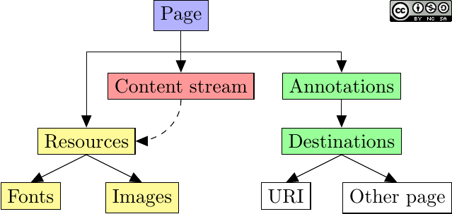

Extracting Tables from PDFs
Using Camelot and Excalibur to automate PDF table extraction and export
Dimiter Naydenov
Overview
- PDF: brief history, structure, representing tables
- Camelot & Excalibur: overview, main features, installation
- Demo: quick tour of Camelot, visual debugging, and plotting
- Future improvements, Q&A
Portable Document Format
almost 30 years ago…
This document describes the base technology and ideas behind the project named "Camelot".
[…] a universal way to communicate documents across a wide variety of machine configurations, operating systems and communication networks. […] viewable on any display […] printable on any modern printers.
—The Camelot Project, John Warnock
source:
Evolution of the Digital Document:
Celebrating Adobe Acrobat’s 25th Anniversary
PDF: At a Glance
- Created in the early 1990s by Adobe Systems
- Predates the World Wide Web and HTML
- Proprietary format initially, released as open standard as of v1.7
- Based on a subset of Adobe PostScript
- Self-contained: embedded fonts, attachments, annotations, rich media, etc.
- 13 versions released; an ISO standard since 2008 (PDF 1.7).
- Structured as a hierarchy of objects (words, paragraphs, fonts, etc.)

PDF: Structure
Text Selection & PDF "Tables"
Looks familiar?
Often you need to: select one cell at a time, copy & paste, repeat.
PDF Table Extraction Tools
- Tabula - Java-based, open-source.
- pdfplumber - Python, open-source.
- pdftables - Python, proprietary, paid.
- pdf-table-extract - Python, open-source, no longer maintained.
- OCR.space - Proprietary, free and paid online service.
Camelot & Excalibur
Camelot

https://github.com/camelot-dev/camelot
Excalibur
https://github.com/camelot-dev/excalibur
https://tryexcalibur.com
Started in 2016 by Vinayak Mehta @vortex_ape
at SocialCops in Bangalore, India.
Camelot: Features
- Excellent documentation
- Python-based, MIT licensed
- Two extraction algorithms: Lattice and Stream
- Works well out-of-the-box, but very configurable
- Exports to CSV, TSV, Excel, JSON, HTML, or Pandas DataFrames!
- Visual debugging and plotting with
matplotlib - Actively maintained, contributors welcome!
Camelot & Excalibur: Installation
Camelot
Using Conda (easiest way)
conda install -c conda-forge camelot-py
Using pip, after installing prerequisites: tk and ghostscript
pip install --upgrade pip camelot-py[cv]
Excalibur
Using pip, after installing prerequisites tk and ghostscript
pip install --upgrade pip excalibur-py
Demo Time!
Future Improvements / Q&A
- Performance improvements
- Replacing
Ghostscriptwith alternatives - More tests
- Better memory footprint with large PDFs
<your-favourite-feature?>
Questions ?
@dimitern